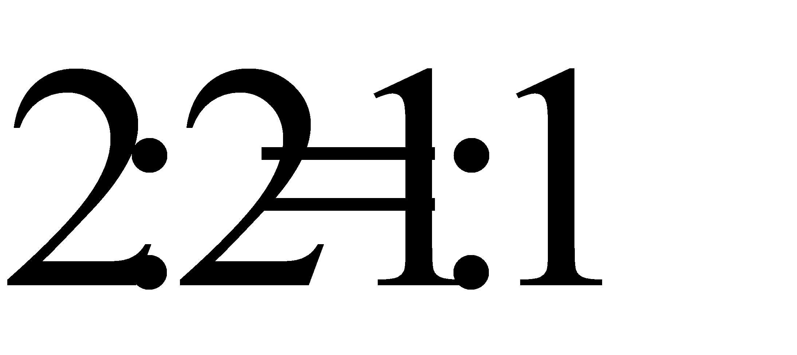
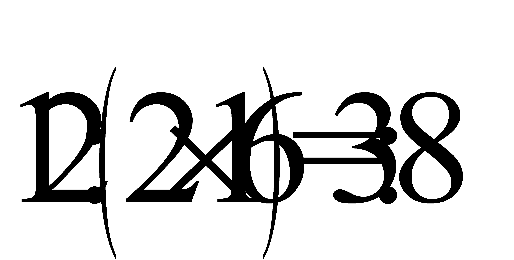
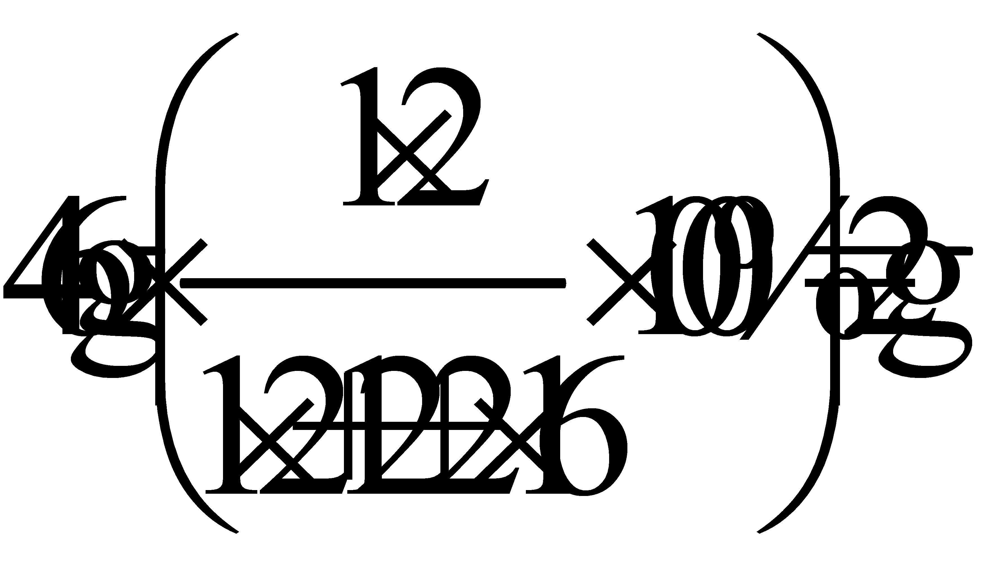

2020年北京市中考化学试题 · 选择题 第11、12题 · 对应解析
11.利用如图装置验证了空气中氧气的含量。下列叙述不正确的是

A. 实验前需检查装置气密性
B. 白磷的作用是消耗试管中的氧气
C 白磷熄火、试管冷却后再打开止水夹
白磷熄火、试管冷却后再打开止水夹
D. 最终量筒中液面约降至40mL刻度线处
【答案】D
【解析】
【详解】A、该装置是利用白磷燃烧消耗氧气，反应后，装置内压强减小，在压强差的作用下，量筒中的水进入试管，进入水的体积就是空气中氧气的体积，故实验前需检查装置的气密性，否则，装置漏气，外界空气进入，会使实验结果偏小，不符合题意；
B、白磷的作用是将试管内的氧气耗尽，使装置内压强减小，在压强差的作用下，量筒中的水进入试管，进入水的体积就是空气中氧气的体积，不符合题意；
C、白磷熄灭，试管冷却后，再打开止水夹，否则，试管内的气体受热膨胀，占据了一定的空间，会使进入水的体积偏小，从而使实验结果偏小，不符合题意；
D、空气中氧气的体积约占空气体积的，故进入水的体积大约是：130mL×=26mL，故最终量筒中液面约降至50mL-26mL=24mL刻度线处，符合题意。
故选D。
12.甲酸（HCOOH）具有清洁制氢的巨大潜力，其分解前后分子种类变化的微观示意图如下：

下列说法正确的是
A. 甲酸分子中氢、氧原子个数比为1:2
B. 乙中碳、氧元素质量比为1：2
C. 46g甲酸中氢元素质量为2g
D. 生成甲与乙的分子个数比为2：1
【答案】C
【解析】
【分析】
由微观示意图可知，反应 化学方程式为。
化学方程式为。
【详解】A、甲酸化学式为HCOOH，甲酸分子中氢、氧原子个数比为

，故A不正确；B、乙是CO2，乙中碳、氧元素质量比为

，故B不正确；C、甲酸化学式为HCOOH，46g甲酸中氢元素质量为

，故C正确；D、反应的化学方程式为，则生成甲与乙的分子个数比为1:1，故D不正确。故选C。
第二部分非选择题（共33分）
【生活现象解释】